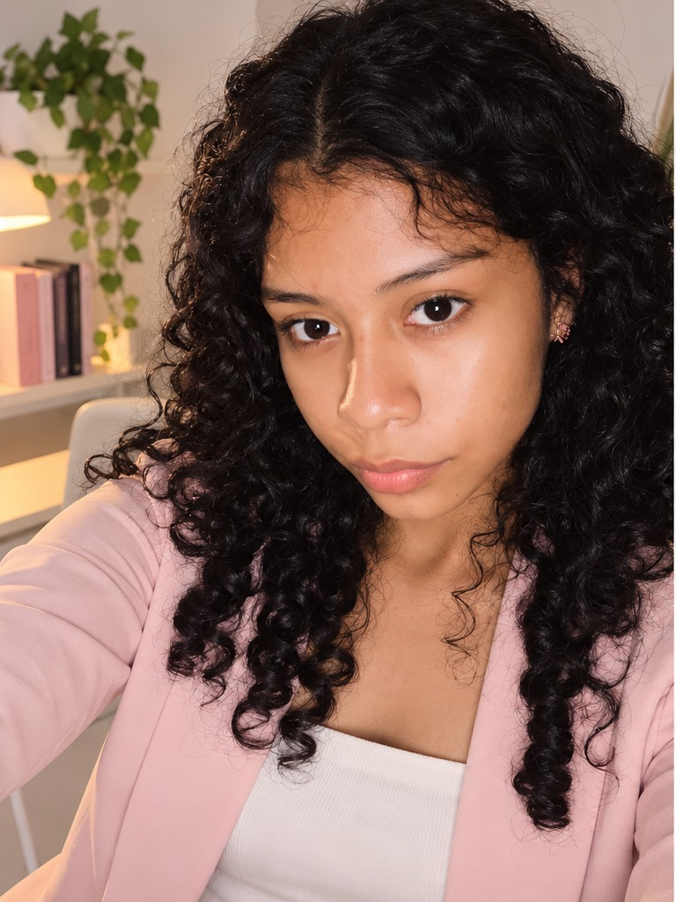
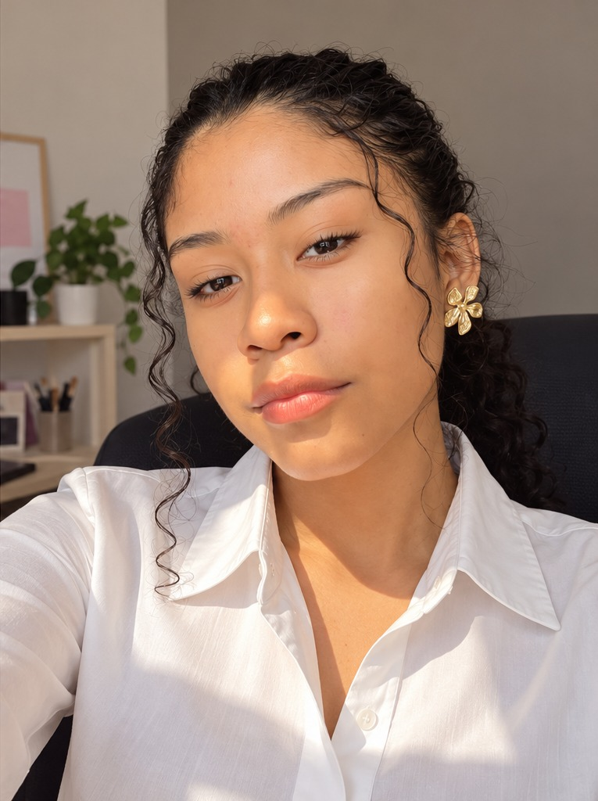

BIENVENIDO A MI ESPACIO
Hola, soy Diana Paola Nava Gutiérrez.
Estudiante de Ingeniería en Sistemas Computacionales en el TecNM Campus Acapulco.
Este es un espacio para compartir mi aprendizaje y las prácticas que he realizado en Programación Web.
Explorar mi portafolio

UN POCO SOBRE MÍ
Acerca de mí
Soy Diana Paola Nava Gutiérrez, estudiante de Ingeniería en Sistemas Computacionales en el TecNM Campus Acapulco.
Me interesa seguir aprendiendo sobre desarrollo web, bases de datos y tecnología. Disfruto desarrollar mis habilidades mediante actividades prácticas y nuevos retos académicos.
Este portafolio reúne algunas de las evidencias de mi formación en Programación Web.
MIS TRABAJOS
Portafolio de evidencias
Selecciona una práctica para verla sin salir de mi página.
Práctica 1
Abrir en otra pestaña ↗Puedes desplazarte dentro de la vista previa. Algunas prácticas se diseñaron originalmente para pantallas de computadora.
HABLEMOS
Contacto
Si deseas comunicarte conmigo, puedes utilizar alguno de los siguientes medios.